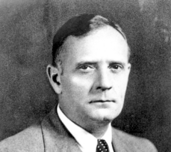
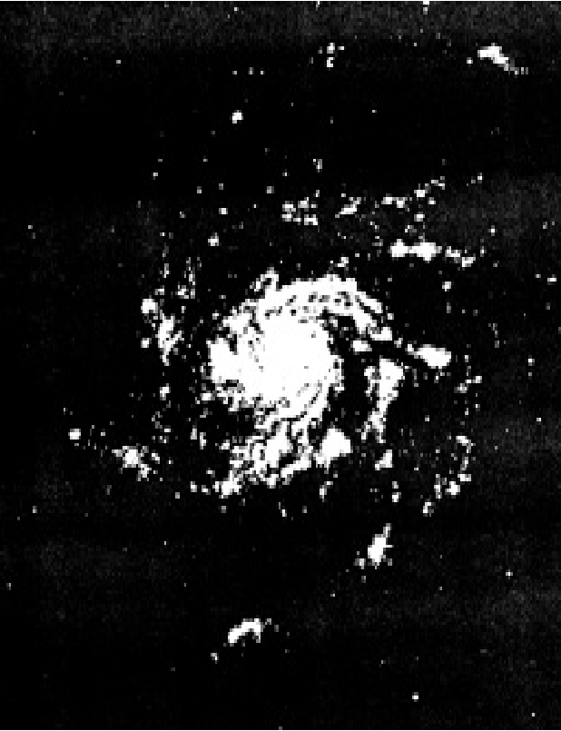
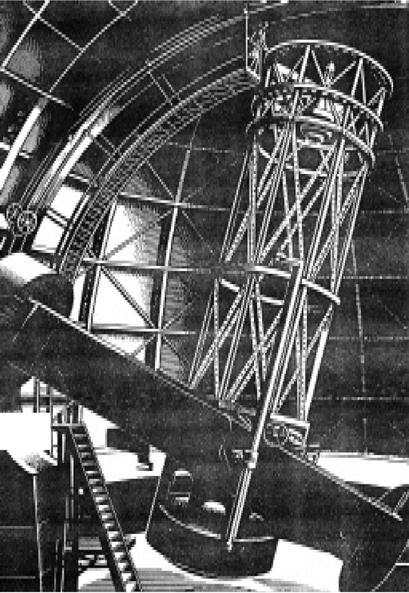

Edwin Powell Hubble (1) đứng bên kính viễn vọng khúc xạ đường kính 152cm có tiêu cự kiểu Newton, gương mặt dài và cương nghị của ông in bóng lên bầu trời. Ông đang điều chỉnh để biết chắc rằng kính viễn vọng hướng chính xác vào một đám sao và tinh vân mờ trong khi ông chụp ảnh chúng. Một làn gió mát mẻ thổi qua chiếc áo choàng nhà binh, vật gợi nhớ những ngày trong quân đội của ông vừa qua. Khói từ chiếc tẩu thuốc ngậm trên miệng ông tỏa nhẹ trong mái vòm đài thiên văn.

Sau một lát, ông bước lui và thở phào nhẹ nhõm. Kính phim đã được lộ sáng. Milton Humason, người đã quan sát ông, nói:
- Đêm nay, các điều kiện nhìn có vẻ khá tệ. tôi hy vọng ông sẽ thu được điều gì đó trên kính phim ấy.
Hubble mang kính phim đến buồng tối để hiện, ông nói:
- Chúng ta sẽ sớm biết được thôi.
Lúc quay trở lại, ông mừng rỡ tuyên bố:
- Nếu đây là mẫu của điều kiện nhìn kém thì sắp tới tôi sẽ thường xuyên có các bức ảnh có thể dùng được, chụp bằng các kính viễn vọng của đài thiên văn Núi Wilson.
Đấy là vào năm 1919, lúc Hubble vừa bắt đầu làm việc ở đài thiên văn này. Ông vui mừng với trang bị ở đây mà ông tùy ý sử dụng. Ở đây không những có kính viễn vọng 152cm đáng tin cậy, mà còn có kính viễn vọng khúc xạ 254cm, chiếc kính lớn mới do Hale xây dựng. Nằm trong mái vòm rộng, cỗ máy này nặng 100 tấn, gương của nó phải mất sáu năm để mài. Ngoài ra, còn có trên 30động cơ điện điều khiển từng chuyển động của kính viễn vọng và mái vòm. Với gương có diện tích lớn gấp ba lần diện tích gương của kính 152cm, Hale biết rằng nó sẽ tiết lộ các bí mật mà kính viễn vọng cũ chưa cho thấy hết.
Đối với Hubble, các kính viễn vọng lớn này là rất quan trọng. Chỉ với chúng, ông mới có thể tìm cách thực hiện tham vọng lớn của mình: thăm dò các thiên hà. Ông muốn xác định, một lần và cho mãi mãi, liệu chúng là các nhóm sao trong hệ sao của chúng ta hay là các thiên thể riêng rẽ ở xa không kể xiết.
Vào thời bấy giờ, câu hỏi liệu các thiên hà có thuộc về hệ sao của chúng ta hay không, đang được các nhà thiên văn khắp nơi tranh luận. Mặc dù Huggins và những người sau đó đã chứng minh rằng các thiên hà là các nhóm lớn gồm các sao, nhưng không ai có thể tìm ra liệu chúng có thực sự là các hệ sao riêng rẽ hay không.
Một số người ủng hộ quan điểm của Herschel, tin rằng mỗi thiên hà là một hệ sao ở xa tương đương với dải Ngân hà. Một số người khác nghĩ rằng các hệ sao này nằm trong đĩa rộng lớn mà Shapley vừa đo được. Một sự thật rõ ràng là chúng hoặc có dạng elip, hoặc có dạng xoắn ốc. Hubble nhận xét: “ Điều mà sẽ nói cho chúng ta biết nhiều nhất chính là khoảng cách của chúng”.
Nhưng làm thế nào mà ông đo được khoảng cách tới bất kỳ một hệ sao khác thường và xa tít này? Ông trầm ngâm: “ Có thể mình sẽ dùng các sao biến quang co giãn như là đèn hiệu theo cách mà Shapley đã làm”.
Hubble bắt đầu săn tìm các sao biến quang co giãn trong một hệ có dạng lởm chởm trông như một hệ trong các đám mây Magellan và được lập danh mục là NGC 6822. Đêm này sang đêm khác, ông quan sát hệ sao này bằng kính viễn vọng khúc xạ 152cm, thậm chí mong mỏi thu được các bức ảnh có thể tin cậy của một hoặc hai sao biến quang co giãn.
Đến năm 1923, ông xoay xở để phân biệt ra 12 sao biến quang trong hệ này. Nhưng ông tỏ ra thận trọng, vì ông chưa biết chúng thuộc về loại sao biến quang nào. Chúng trông như các sao biến quang co giãn, nhưng ông không thể biết chắc chúng thuộc loại nào.
Hubble quyết định rằng kính viễn vọng khúc xạ 152cm không đáp ứng được công việc này, vì ánh sáng thu vào cần phải nhiều hơn. Do đó, ông chuyển sang kính viễn vọng khúc xạ 254cm.
Đậy rồi, một hệ xoắn ốc có ký hiệu M31 trong chòm Andromeda (tiên Nữ) làm Hubble chú ý. Ngay trên kính phim đầu tiên được hiện rõ, ông thấy hai sao mới bình thường và một sao có cấp sáng 18 thuộc loại mà ông không thể nhận dạng. Lúc đầu, ông nghĩ nó là một sao mới khác. Nhưng sau khi kiểm tra một loạt rất nhiều các kính phim cũ đã chụp tại đài thiên văn này, ông hết sức vui mừng thấy nó là một sao biến quang co giãn. Ông nhận xét:
- Sao này phải mất một tháng để thay đổi, độ sáng thực của nó vào khoảng 7.000 lần so với Mặt trời.
Tính toán từ hai đại lượng có liên quan với nhau giữa độ sáng và khoảng cách, chẳng bao lâu ông có được khoảng cách ước tính của thiên hà xoắn này. Đáp số làm ông sửng sốt khoảng cách vào khoảng 900.000 năm ánh sáng.
Khoảng cách ấy chứng tỏ rằng hệ sao xoắn này ở rất xa, nằm ngoài dải Ngân hà. Ngay khi các nhà thiên văn khác ở đài Núi Wilson nghe được phát hiện của Hubble, họ tập trung vào nghiên cứu thiên hà lớn này. Chủ yếu dựa vào các ảnh chụp bằng kính viễn vọng 254cm, tìm cách xác định vị trí 36 sao biến quang trong số hàng triệu sao trong thiên hà, trong số này, có 12 sao được nhận dạng chắc chắn là sao biến quang co giãn. Kiểm tra độ sáng của chúng, họ thấy rằng khoảng cách ước tính của Hubble vẫn đúng.

Nhiều thiên hà có dạng xoắn ốc. Hình bên rút ra từ một bức ảnh của thiên hà M101 trong chòm Gấu Lớn, chỉ cho thấy các phần sáng nhất của thiên hà này
Trong lúc đó, Hubble trở lại với NGC 6822. Lần này, ông xác đinh vị trí một số sao biến quang co giãn đã được nhận dạng. Từ các sao này, ông tính rằn hệ sao này ở xa 700.000 năm ánh sáng. Vậy là đến đây, có hai hệ sao lớn nằm xa ngoài giới hạn Thiên hà của chúng ta. Nếu hai hệ này xa như vậy, thì các hệ lớn sao khác cũng hẳn là các thiên hà và hẳn là ở xa hơn nữa. Để chứng minh điều đó, ông tiếp tục săn tìm cá sao biến quang co giãn. Đến năm 1926, ông đã phát hiện 35 sao trong một thiên hà xoắn khác, có ký hiệu M33. Hóa ra, thiên hà này ở xa 850.000 năm ánh sáng.
Trong lúc đó, một nhà thiên văn tên là V.M.Slipher đã và đang nghiên cứu các xê dịch của quang phổ, ông làm việc tại đài thiên văn Lowell ở Flagstaff, bang Ariona. Cũng như Huggins, ông quan tâm đến đo vận tốc của sao thông qua các xê dịch quang phổ. Tuy nhiên, không như các nhà thiên văn người Anh khác, Slipher muốn tìm vận tốc không phải của các sao đơn, mà của các nhóm lớn – các nhóm mà Hubble đang phát hiện là các thiên hà riêng rẽ.
Slipher đã bắt đầu công trình của ông 14 năm trươc, vào năm 1912. Thật kỳ lạ là, ông đã chọn để bắt đầu bằng chính thiên hà Andromeda mà sau đó mang đến cho Hubble thành công đầu tiên. Sử dụng một máy ảnh chụp nhanh, Slipher thu được quang phổ rõ nét rồi ông quan sát sự xê dịch. Nó hướng về phần xanh dương, vậy là thiên hà này đang tiến tới. Ông xem xét kỹ kính phim, hầu như không thể tin vào kết quả của mình. Nhưng nó vẫn hiện diện trên đấy, điều này có nghĩa là thiên hà đang tiến tới với vận tốc kinh hoàng: 306km/giây! ( Chúng ta không cần lo sợ về một vụ va đụng, thiên hà xoắn Andromeda sẽ không đến gần Trái đất trong hơn một tỉ năm nữa).
Đến năm 1914, Slipher đã đo vận tốc của 13 thiên hà; đến năm 1923, con số đó tăng lên đến 41. Lần này, các quan sát khác đưa tổng số lên đến 46, nhưng Slipher hầu như vẫn là người độc quyền trong lĩnh vực nghiên cứu này. Khi só lượng các thiên hà được phát hiện tăng lên, ông thấy rằng mặc dù thiên hà Andromeda có ký hiệu M31 xem ra đang chuyển động hướng về Trái đất, nhưng hầu như từng thiên hà khác đang chuyển động ra xa. Tất cả đều di chuyển với vận tốc chóng mặt, trung bình khoảng 603km/giây, cá biệt có trường hợp nhanh đến 1.810km/giây. Không một nhà thiên văn nào từng nghĩ đến các vận tốc như vậy hiện diện đối với các thiên thể lớn trong vũ trụ.
Các nhà thiên văn khắp nơi quan tâm đến những phát hiện của Slipher, nhưng Hubble thì đặc biệt quan tâm. Năm 1929, Hubbler đo khoảng cách tới 24 thiên hà mà vận tốc của chúng đã được Slipher tìm ra. Ông để ý đến một hiện tượng kỳ lạ: các thiên hà càng ở xa thì chúng càng lùi xa Trái đất.

.
Điều này có nghĩa là gì? Có phải đây là sự trùng hợp ngẫu nhiên, hay nó có tầm quan trọng thực sự nào đó?
Ngồi trong nhà ở San Marino, Hubble suy nghĩ liên miên vầ vấn đề này. Ngọn lửa rực lên trong lò sưởi và bên cạnh ông là các côn trùng khô được lựa chọn làm mồi câu. Là một người yêu thích câu cá, ông đang dự định một chuyến đi câu ở dãy núi Rocky. Nhưng suy nghĩ của ông lẩn trốn việc đi câu và trở lại với bí ẩn của các thiên hà lùi xa.
Ông có thể tìm sự giải thích duy nhất. nhưng ông do dự tiếp nhận nó, bởi vì hình như nó bắt đầu đẻ ra thêm quá nhiều câu hỏi. Cuối cùng, ông nói với vợ là Grace:
- Trông như thể vũ trụ đang giãn nở. Tại sao tất cả các thiên hà khác đang chuyển động ra xa theo mọi hướng?
Vợ ông nhìn ông như thể ông hóa rồ, bà hỏi:
- Giãn nở ư? Sao lại như thế được? Mà nó đang giãn nở thành cái gì?
Hubble thầm thì:
- Anh không rõ, nhưng không có sự giải thích nào khác mà anh có thể biết.
Để thử tìm xem phỏng đoán của mình đúng hay sai, Hubble quyết định rằng cần phải có một chương trình nghiên cứu lớn. Khi gặp lại Humason, ông nói:
- Slipher chỉ dùng kính viễn vọng khúc xạ 61cm. Hãy tưởng tượng những gì chúng ta có thể làm với kính viễn vọng phản xạ 254cm.
Hai ông thảo luận dự án với W.A.Adams, giờ đây là giám đốc đài thiên văn thay thế cho Hale. Adams phấn khích bởi nhiệt tình của họ. Ông nói:
- Tôi sẽ ấn định từng lượng thời gian có thể cho hai ông với kính viễn vọng 254cm.
Mọi người có liên quan đến dự án cảm thấy rằng đây là dự án thiên văn đầy tham vọng nhất được thực hiện từ trước đến nay. Xem ra như thể họ đang thiến tới ngay các mép của vũ trụ.
Kế hoạch của Hubble là đo các khoảng cách bằng những phương pháp khác nhau thẳng tới các thiên hà xa nhất, và kiểm tra các khoảng cách này với các vận tốc do Humason thu được thông qua phân tích sự xê dịch quang phổ. Nếu linh cảm của ông về sự giãn nở của vũ trụ là đúng, thì các vận tốc sẽ tiếp tục tăng dần với khoảng cách.
Để thử kính viễn vọng, Humason bắt đầu bằng kiểm tra các xê dịch trong quang phổ đối với một vài thiên hà mà vận tốc của chúng đã được biết. Sau đó, ông xoay kính viễn vọng hướng đến các sao ở xa hơn. Slipher đã quan sát được xa, nhưng kính viễn vọng 254cm này sẽ quan sát xa hơn 35 lần.
Để chụp ảnh quang phổ, Humason cho kính phim lộ sáng rát lâu, giữ kính viễn vọng chính xác vào mục tiêu toàn bộ thời gian. Ông cũng phải quan sát sự nhiễu loạn không khí sẽ thay đổi hình ảnh một cách không thể đoán trước. Cơ cấu quay tự động của kính viễn vọng chẳng giúp ích gì trong sự thay đổi này.
Khi ông quan sát càng xa, các thiên hà xuất hiện càng mờ, đòi hỏi lộ sáng cho kính phim càng lâu. Cuối cùng, ông phải cần mười đêm liên tục chỉ để thu được một bức ảnh. Chỉ có người không biết mệt mỏi như Humason mới có thể duy trì với công việc này.
Đến năm 1935, ông đo được 150 vận tốc mới, chúng trở nên lớn dần theo sự tăng lên về khoảng cách. Các khoảng cách này được Hubble kiểm tra một cách độc lập, ông dùng làm cơ sở để đánh giá cách giảm bớt độ sáng biểu kiến. Bắt đầu với các thiên hà trong vùng chòm Pegasus (Phi mã), di chuyển với vận tốc chỉ 3.933km/ giây, Humason kết thúc với các thiên hà ở xa 240 triệu năm ánh sáng và lùi xa dần với vận tốc 42.614km/ giây, tức khoảng 1/7 vận tốc sánh sáng.
Hubble viết: “ Sự liên quan giữa vận tốc và khoảng cách dường như tồn tại trên một thể tích không gian vô cùng lớn. Vũ trụ xem ra chắc chắn đang giãn nở”.
Song, Hubble thận trọng chỉ ra rằng mọi cái đều phụ thuộc vào quan sát xê dịch quang phổ trong phần đỏ. Ông nói: “ Hoặc các xê dịch này tiết lộ các vận tốc, hoặc chúng được gây ra bởi một nguyên lý vật lý chưa được biết”.
Như các nhà khoa học thường làm, nếu có thể, Hubble vẫn thích cách giải thích sự xê dịch phổ bằng các sự kiện đã được biết. Và mọi cái dường như báo hiệu rằng các xê dịch phổ vẫn cho biết sự chuyển động. Ông viết: “ Nếu vũ trụ đang giãn nở, thì rốt cuộc cũng có thể xác định được bản chất của sự giãn nở và thời điểm mà tại đấy sự giãn nở bắt đầu – nghĩa là tuổi của vũ trụ”.
Ngày nay, các nhà thiên văn đồng ý với Hubble rằng vũ trụ dường như đang giãn nở. thật ra, sự giãn nở này được Albert Einstein tiên đoán trước đó lâu so với công trình của Hubble. Chúng ta cũng biết rằng kích thước vũ trụ thậm chí lớn hơn kích thước mà Hubble giả định. Walter Baade đã chứng minh rằng có nhiều hơn một loại sao biến quang, điều này có nghĩa là các sao được dùng làm đèn hiệu ban đầu của Hubble cho biết các khoảng cách lớn hơn mà ông hình dung. Do điều này và các lý do khác, ngày nay chúng ta biết rằng khoảng cách ước tính của ông nhỏ hơn khoảng 2-2,5 lần.
Liệu chúng ta sẽ biết được tuổi vũ trụ hay không, đó là vấn đề khác. Để tìm ra tuổi vũ trụ, các nhà thiên văn đang thăm dò ngày càng xa hơn vào những nơi sâu thẳm của vũ trụ. Đối với việc này, giờ đây họ có một kính viễn vọng phản xạ thậm chí còn lớn hơn với đường kính 508cm, đặt trên núi Palomar, miền nam bang California. Cho đến nay, kính này đã nhìn xa được 5 tỉ năm ánh sáng vào không gian và cho thấy các thiên hà đang lùi xa dần với vận tốc 140.954km/ giây, tức gần bằng một nửa vận tốc ánh sáng. Song các nhà thiên văn ngày nay cũng có một cách hoàn toàn mới để thăm dò vũ trụ, một cách thâm nhập thậm chí còn xa hơn.
Thật kỳ lạ là, người nghĩ ra cách mới này không phải là một nhà thiên văn. Thật ra, đa số các nhà thiên văn mới biết đến rất lâu sau khi ông đã hoàn thành công trình của mình. Tên ông là Karl Jansky.
Chú thích:
(1) Edwin Powell Hubble (1889-1953). Nhà thiên văn người Mỹ, làm việc ở đài thiên văn Núi Wilson từ 1919. Các công trình của ông đặt nền móng cho thiên văn ngoại Thiên hà hiện đại. Năm 1924 ông tìm thấy có 36 sao biến quang có trong tinh văn M31, trong đó có 12 sao biến quang tuần hoàn, nhờ đó chứng tỏ rằng tinh văn này là hệ sao ở ngoài Thiên hà. Các công trình tiếp theo là nghiên cứu thành phần, hình dạng, sự phân bố và chuyển động của các Thiên hà. Ông tìm thấy trong các thiên hà ở gần có các sao mới, sao biến quang tuần hoàn, quán tính tinh cầu, tinh văn khí, sao đỏ và sao siêu khổng lồ